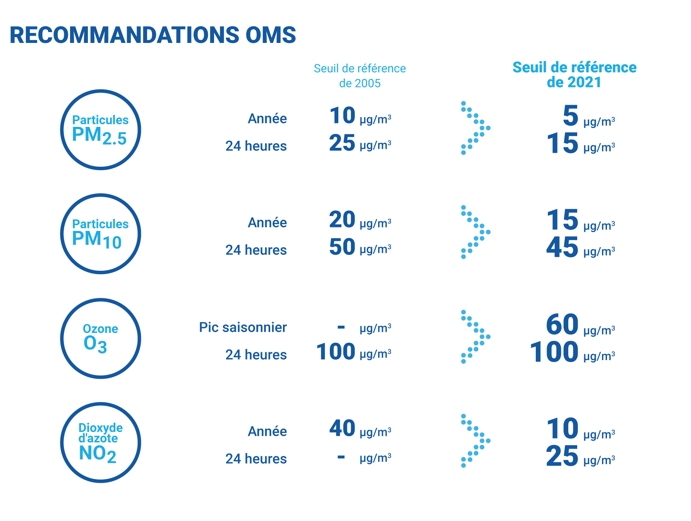
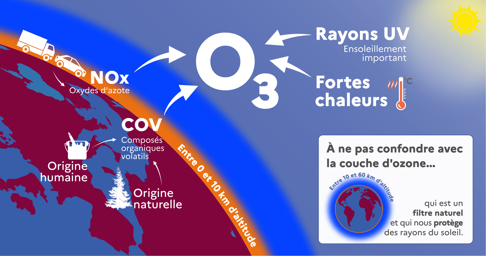

Pour aller plus loin
Les recommandations de l’OMS

O3 et ensoleillement
Afin de mieux comprendre les liens entre conditions météorologiques et création d’O3, voici quelques explications tirées d’internet :
-> D’après le ministère de l’environnment:
À très haute altitude, entre 10 et 60 km, l’ozone est abondant à l’état naturel et constitue une « couche » qui protège les organismes vivants sur Terre en filtrant les rayonnements UV du soleil. À basse altitude, entre 0 et 10 km, il est naturellement présent en faibles quantités, mais sa teneur peut augmenter et atteindre alors des niveaux de concentration suffisants pour affecter la santé, la végétation et les rendements des cultures. Le phénomène est complexe car l’ozone est issu de réactions entre différents polluants : oxydes d’azote (NOx), composés organiques volatils (COV) dont le méthane (CH4) rejetés par les activités humaines (transport routier, industrie, chauffage résidentiel, utilisation de solvants, activités agricoles), ainsi que par la végétation (espèces végétales cultivées ou non et sols) sous l’effet des rayonnements UV solaires.

En période estivale, les températures élevées et l’ensoleillement plus important accentuent cette production d’ozone, ce qui se traduit notamment par des « pics d’ozone ». Sur la période 2000-2020, on observe une baisse de l’intensité de ceux-ci sur une partie du territoire. Néanmoins les teneurs annuelles moyennes dans l’air restent élevées, elles ont même augmenté au cours des deux dernières décennies. Pour y remédier, il est essentiel de poursuivre les efforts de réduction des émissions des polluants à l’origine de l’ozone.
A propos du projet
Ce projet a été réalisé dans le cadre de l’unité d’enseignement Développement Logiciel du Master SSD à l’Université des Sciences de Montpellier.
Données
Les données utilisées pour la réalisation de se projet sont issues des pages suivantes :
Atmo Occitanie : https://data-atmo-occitanie.opendata.arcgis.com/pages/liste-des-flux
SYNOP data :
https://public.opendatasoft.com/explore/dataset/donnees-synop-essentielles-omm/api/?sort=date
Contributeurs
Ibrahim Attoumani
Tristan Rivaldi
Kilian Saint-Chély
Abel Silly
Jeanne Vivier